MySQL数据库|基础入门
关于数据库
对于数据的存储，事实上可以直接使用文件来保存，但是为什么要存在数据库，因为文件存储数据有很大的缺点：
- 文件不利于数据查询和管理
- 文件存储数据不安全
- 文件在程序中控制不安全
- 文件不利于存放海量数据
为了解决上面的一些问题，许多公司便设计出了各类数据库用来存储和管理数据，存储介质主要有磁盘和内存。
MySQL安装|Linux
以Ubuntu20.04 为例 | 转载自:https://kalasearch.cn/community/tutorials/ubuntu-20-04-install-mysql/
安装
在终端通过命令进行安装:
1 | 更新你的 ubuntu 依赖库索引 |
1 | sudo apt install mysql-server |
在安装完毕后，有少数情况下 MySQL 不会自动启动。为了以防万一，请先确认 MySQL 已经被成功启动起来了:
1 | 重启 MySQL 服务以保证 MySQL 已经启动 |
配置
第一次安装好 MySQL 之后，我们需要运行 MySQL 自带的安全脚本来确保数据库系统的安全。这个脚本会把一些默认选项，比如允许远程 root 登录之类的设置改掉。
我们以 root 权限运行以下安全脚本
1 | sudo mysql_secure_installation |
这个脚本开始运行时，会问我们几个问题，主要包括
- 是否需要 MySQL 帮你检查密码强度（我们推荐回答需要，即 Y）
1 | root@58e152781375:/home/kala# sudo mysql_secure_installation |
- 选择哪种强度的密码 0 = 低强度，1 = 中等强度， 2 = 强密码 （我们建议选择2）
1 | There are three levels of password validation policy: |
设置你的 root 密码。如果你选择了强密码，那么你的密码里必须有数字、大小写字母混合，且密码中不允许有常见英文单词出现
比如说，
Ywie_8371jmchw就是一个强密码。
1 | Please set the password for root here. |
其余的几个问题是加强安全系数用的，一路答 Y 代表 Yes 即可。它会做这么几个操作
- 删除默认数据库
- 不允许远程 root 登录
- 删除匿名用户
请注意，在上面虽然你设置了 root 用户的密码，但是必须走完下一步才能允许 root 用户用密码登录。这一点千万别漏了！
调整用户权限
在 Ubuntu 系统中，MySQL 版本 5.7 以上，root 用户是只能通过
auto_socket来登录的。你先不用管auth_socket本身是什么，但是这意味着你不能用你在第二步中设置的密码来登录。
虽然这的确加强了安全性，但很多时候对于我们管理 MySQL 或者用 phpMyAdmin 之类的管理系统来管理数据库来说，非常非常地不方便。因此建议你完成这一步，来允许用密码登录。
要允许密码登录，我们需要把默认的鉴权方式从 auth_socket 改为 mysql_native_password。按以下步骤开始更改
1 | # 连接 MySQL 数据库 |
接下来，在 MySQL 里（注意光标前面的 mysql> 这代表我们已经在 MySQL 服务器上了）我们需要查看用户的鉴权设置
1 | SELECT user,authentication_string,plugin,host FROM mysql.user; |
注意看 root 用户这一行（第5行），它的 plugin 这一列就是我们刚说的 auth_socket，这是不允许用密码登录的。那么，我们用 ALTER USER SQL 语句来把它改掉，如下
1 | ALTER USER 'root'@'localhost' IDENTIFIED WITH caching_sha2_password BY 'YOUR_PASS_WORD'; |
注意，上面这里的 YOUR_PASS_WORD 应该输入你在第二步中的密码。如果你输了另一个新的密码，那么你的 root 用户的密码会被改掉，这里很容易掉坑。
请留心，这里我们用
ALTER USER命令把 root 用户的鉴权改为了caching_sha2_password方式。如果你看 MySQL 文档的话，会发现 MySQL 官方是推荐这个方式的。但是如果你需要用 PHP 或者phpMyAdmin的话，你需要把caching_sha2_password换成mysql_native_password否则会报错。也即是把上面的那句换成ALTER USER 'root'@'localhost' IDENTIFIED WITH mysql_native_password BY 'YOUR_PASS_WORD';
最后的最后，我们用 FLUSH PRIVILEGES 命令让刚才的权限更改生效：
1 | # 让鉴权生效 |
然后我们查看一下更改是不是成功
1 | SELECT user,authentication_string,plugin,host FROM mysql.user; |
请注意 root 这行，鉴权已经换成了 caching_sha2_password。这时我们可以用 ctrl + D 或者敲入 exit 来退出 MySQL 回到 Ubuntu 命令行。
测试
到了这里，我们可以用 service 命令，看一下 mysql 这个服务是不是正常在运行。service 是个用来管理服务（ MySQL 也是 Ubuntu 里服务的一种）的常用命令，推荐大家熟记：
1 | sudo service mysql status |
如果 MySQL 没有在运行的话，你可以用
1 | sudo service mysql restart |
来重启它。
如果你需要验证下客户端连接 MySQL 是不是通畅，那么你可以用 mysqladmin 来尝试一下连接 MySQL。命令和参数如下
1 | # -p 代表使用密码，-u root 代表用户为 root，最后的 version 代表我们想要查看 MySQL 版本，这里查看版本这个 |
上面的输出说明你的 MySQL 正在健康地运行
可视化工具
这里使用的是免费的 WorkBench
选择适合当前系统的安装包下载即可（Windows也是如此）
ubuntu此处下载的是：mysql-workbench-community_8.0.21-1ubuntu20.04_amd64.deb
之后在下载目录里用终端打开：
1 | sudo dpkg -i mysql-workbench-community_8.0.21-1ubuntu20.04_amd64.deb |
等待安装即可
注：如安装失败，按照提示安装相应的依赖包即可
MySQL安装|Windows
下载
^以下以社区版为例^
进入mysql官网|中文选择[Download]，在页面最下面找到[MySQL Community (GPL) Downloads]
并选择下载。
如果速度不理想，还可以通过国内的镜像站下载。
官网提供有两种版本（其实是两种安装方式）：
一、MySQL MSI Installer
这是[安装版本]，在安装过程中，通过将用户的各项选择自动写入ini(配置文件)，即自动配置。适合初学者使用。
二、MySQL ZIP Archive
这是[压缩版本]，需要自己打开ini文件写入配置信息。适合高级用户。
下面以安装 社区版MSI Installer 为例，做个简单演示。
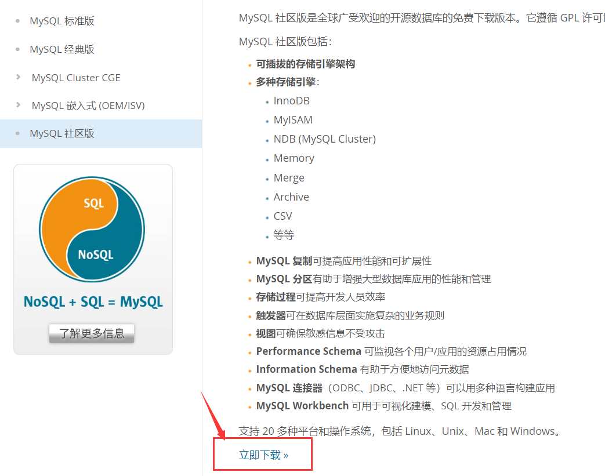
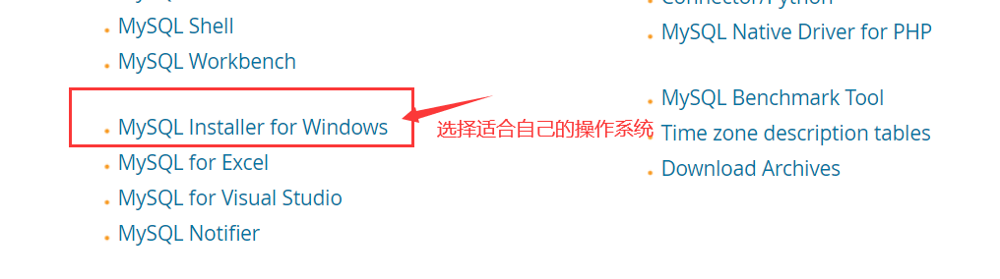
如果选择MSI下载，这里选择第二个资源下载
这里注意一下，虽然显示的是x32，但实际上该安装器是可以选择64位进行安装的，请放心。
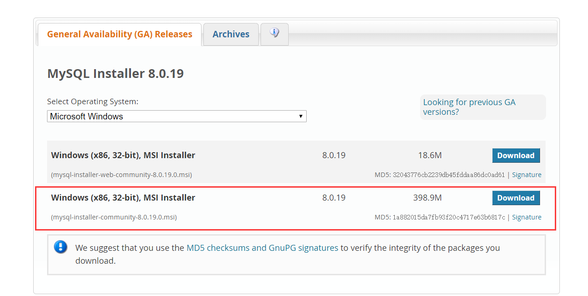
如果是选择ZIP下载，这里选择第一个资源下载（第二个是debug版本）
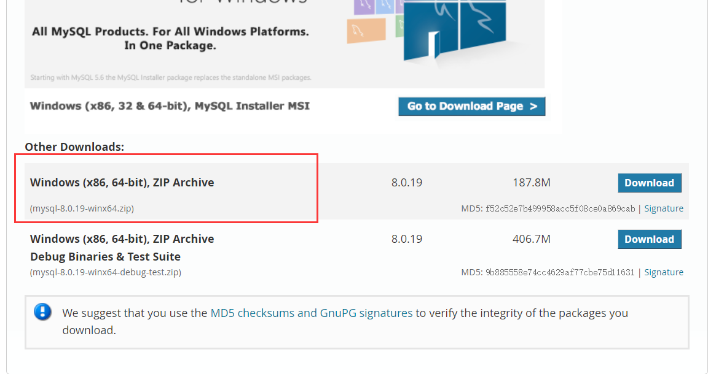
之后会跳转到这个页面。
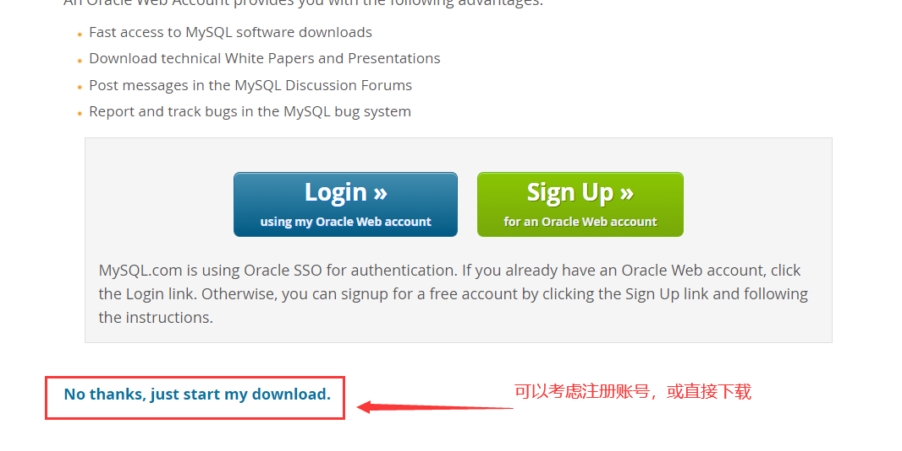
安装详细
MSI版的配置
首先，有的同学打开msi程序后，会出现错误提示，意思就是MySQL需要**.NET Framework4.0**才能继续安装，那去安装就行了，这里不再展开。
打开后，选择 [接受协议] 后，选择 [Custom] ，即自定义安装。可根据自己需求选择：
| 选项 | 含义 |
|---|---|
| Developer Default | 默认安装类型 |
| Server only | 仅作为服务器 |
| Client only | 仅作为客户端 |
| Full | 完全安装类型 |
| Custom | 自定义安装类型 |
为了熟悉安装过程，以下以自定义安装为例继续。
进入这个界面后，根据自己需求在左边选择需要安装的服务和组件，并导入右边。
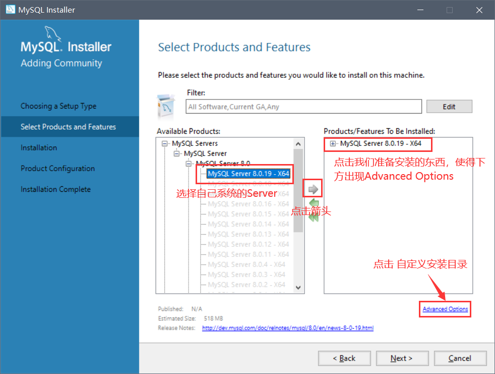
设置安装目录：
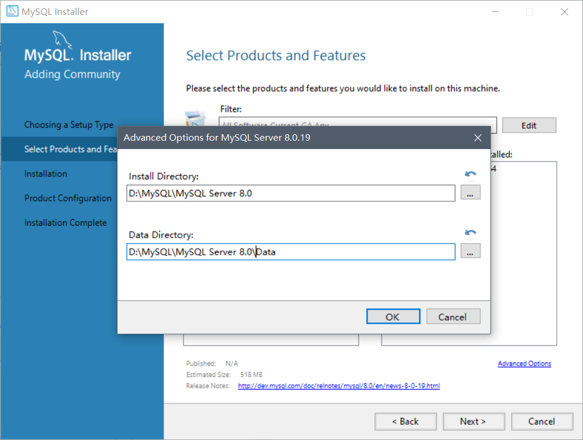
之后[Next]，[Execute]，一路Next到如下界面
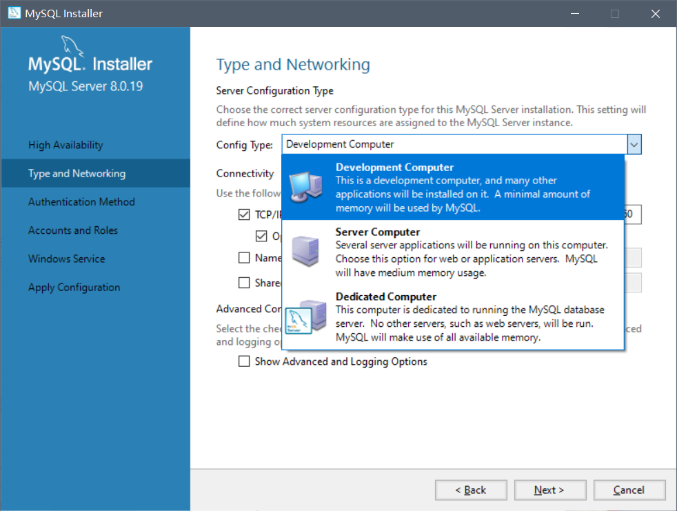
选择配置类型时，我这里选择的是小型电脑，可根据自己的需求更改
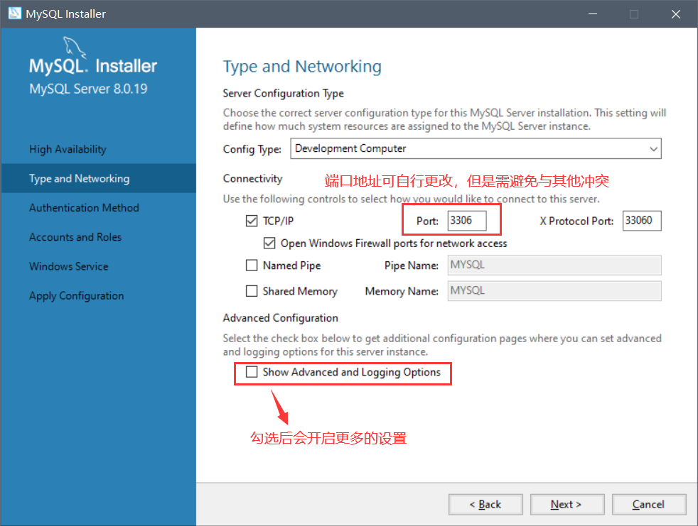
根据需求设置自己的端口和密码，还可以跳过 [add users] 添加其他管理员
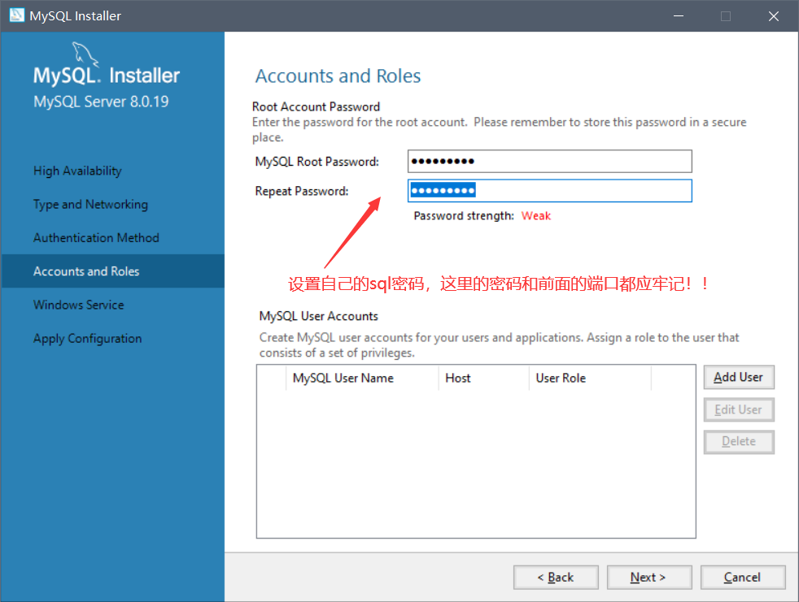
继续Next
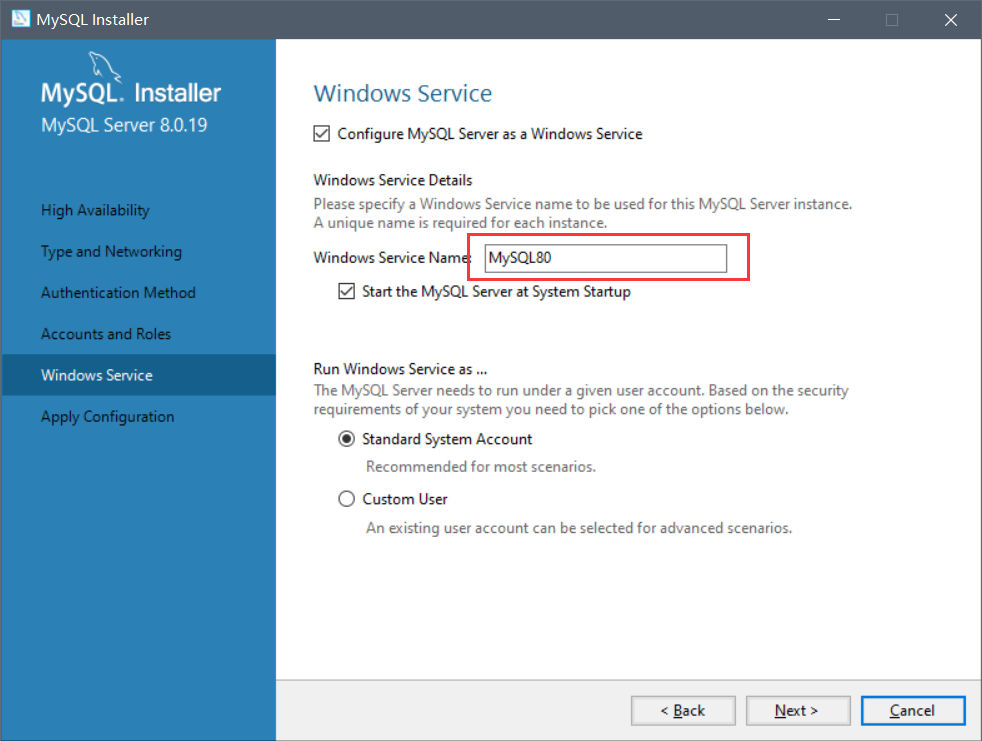
之后再点击 [Execute]，当所需组件安装完成后，点击 [finish]直至安装结束即可。
打开系统的环境变量窗口，添加所安装的mysql的bin文件夹所在位置（环境变量在哪？见另一篇文章）
例如我的是D:\MySQL\MySQL Server 8.0\bin
以上解决
mysql 不是可执行文件或命令？问题，无此问题直接跳过
win+R或其他方法打开命令行窗口(cmd)，通过命令：
1 | mysql -u root -p'yourpasword' |
即 用户(user)是以管理员(root)的方式打开mysql，其密码(password)是yourpassword，我们之前设置的密码。
当然，也可以在输入到-p后，按回车键输入密码，此时输入的密码是不可见的。如下：
1 | mysql -u root -p |
于是，即可进入mysql的世界！
1 | Welcome to the MySQL monitor. Commands end with ; or \g. |
以上是登录成功后的版本号版权声明等mysql的信息，之后在
mysql>后输入mysql命令即可使用！
ZIP版的配置
暂时搁浅
可视化工具
mySQL的可视化程序多种多样，此处使用的是Navicat
Navicat官网：http://www.navicat.com.cn/
MySQL语法
使用前提
数据库服务器、数据库和表的关系
- 安装数据库服务器，只是在机器上安装了一个数据库管理程序，这个管理程序可以管理多个数据库，一般开发人员会针对每一个应用创建一个数据库。
- 为保存应用中实体的数据，一般会在数据库中创建多个表，以保存程序中实体的数据。
一个数据库服务器可以存在多个数据库，而一个数据库也可以存在多个表。
事务
搁浅
Pymysql库
pymysql是由纯python语言写的，可在python中直接操作MySQL的库
安装
1 | pip install pymysql |
初始化
使用
connect方法，传入配置信息1
2
3
4
5
6
7
8
9
10
11
12
13
14# 导包
import pymysql
# 实例化数据库对象
data = {
'host':'127.0.0.1',
'port':3306,
'user':'root',
'passwd':'123456',
'db':'yourdb',# 你的数据库名字
}
conn = pymysql.connect(**data)
# 这里的**data，相当于将data这个字典中的内容中，key-value值作为传递参数的关键字参数及其值
# 本语句等效于：conn = pymysql.connect(host='127.0.0.1',port=3306,...)设置游标
1
sursor = conn.corsor()
游标内拥有
execute()方法，可以对数据库进行操作execute()方法内部传递字符串参数，内容必须是合法的MysSQL语句
基本使用
增删改
使用
execute1
2
3
4
5
6
7
8
9
10# 直接定义字符串变量保存命令
# 如，此处使用MySQL语法，写了一个命令创建
# 有 id ，name 两个属性，分别是 int 和 varchar 类型的表
# 表名是text
sql='''
CRATE TABLE TEXT(id INT,name VARCHAR(20))
'''
# 直接通过该命令执行命令
sursor.execute(dql)提交内容
1
2
3# 如果前面通过execute语句执行了增删改查等操作
# 需要提交内容
conn.commit()关闭退出
1
2
3
4# 关闭游标
cursor.close()
# 关闭数据库
conn.close()